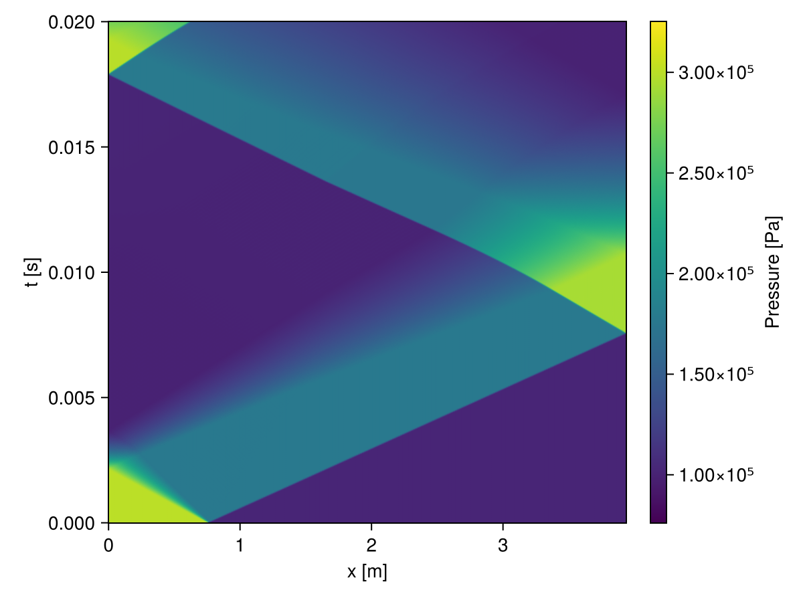

TrixiShockTube
TrixiShockTube provides utility functions to facilitate simulations of multicomponent 1D shock tube problems using Trixi.
Let's start with a simple shock tube problem consisting of nitrogen in the driver section pressurized to 3 bar, and a 50/50 mixture of nitrogen and argon at standard temperature and pressure in the driven section. Gas properties and dimensional units are provided by PyThermo and Unitful, respectively.
julia> using TrixiShockTube, Unitful, PyThermojulia> N₂ = Species("N2"; P = 3.0u"bar")Species(N2, 298.1 K, 3.000e+05 Pa)julia> N₂Ar = Mixture(["N2" => 0.5, "Ar" => 0.5])Mixture(50% nitrogen, 50% argon, 298.1 K, 1.013e+05 Pa)julia> density(N₂), density(N₂Ar)(3.3920706277062145 kg m^-3, 1.3894992999004294 kg m^-3)
The shock tube is initialized at rest with a discontinuity at the interface between the driver and driven sections. build_shocktube_ic creates an initializer and defines the constitutive equations from a list of Species/Mixtures and the lengths of the corresponding shock tube sections. The shock tube is then discretized using a uniform mesh with 2^8 elements.
julia> slabs = (N₂ => ustrip(u"m", 30.0u"inch"), N₂Ar => ustrip(u"m", 125.0u"inch"))(Species(N2, 298.1 K, 3.000e+05 Pa) => 0.762, Mixture(50% nitrogen, 50% argon, 298.1 K, 1.013e+05 Pa) => 3.175)julia> ic, equations = TrixiShockTube.build_shocktube_ic(slabs)(TrixiShockTube.var"#initial_condition_shock#9"{Float64, Tuple{Float64, Float64}, Tuple{Float64, Float64}, TrixiShockTube.var"#loc#5"{Tuple{Float64, Float64}}, Int64}(0.0001, (300000.0, 101325.0), (3.3920706277062145, 1.3894992999004294), TrixiShockTube.var"#loc#5"{Tuple{Float64, Float64}}((0.762, 3.937)), 2), CompressibleEulerMulticomponentEquations1D with 4 variables)julia> semi = build_semidiscretization(slabs, ic, equations; initial_refinement_level=8)┌──────────────────────────────────────────────────────────────────────────────────────────────────┐ │ SemidiscretizationHyperbolic │ │ ════════════════════════════ │ │ #spatial dimensions: ………………………… 1 │ │ mesh: ………………………………………………………………… TreeMesh{1, Trixi.SerialTree{1}} with length 511 │ │ equations: …………………………………………………… CompressibleEulerMulticomponentEquations1D │ │ initial condition: ……………………………… initial_condition_shock │ │ boundary conditions: ………………………… 2 │ │ │ negative x: …………………………………………… boundary_condition_reflect │ │ │ positive x: …………………………………………… boundary_condition_reflect │ │ source terms: …………………………………………… nothing │ │ solver: …………………………………………………………… DG │ │ total #DOFs: ……………………………………………… 1024 │ └──────────────────────────────────────────────────────────────────────────────────────────────────┘
The shock tube is then evolved in time using a 5-stage, 4th order Runge-Kutta method restricted by a CFL number of 0.5. A positivity-preserving limiter is applied to the solution at each time step. The solution is saved at 1000 equally spaced time steps. Trixi.jl saves the conserved variables, so we need to convert the solution to primitive variables u1, p, rho1, rho2, ... with xtdata before plotting.
julia> saveat = LinRange(0, 0.02, 1000)1000-element LinRange{Float64, Int64}: 0.0,2.002e-5,4.004e-5,6.00601e-5,8.00801e-5,…,0.0199399,0.01996,0.01998,0.02julia> limiter! = build_limiter(equations)Trixi.PositivityPreservingLimiterZhangShu{3, Tuple{Float64, Float64, Float64}, Tuple{TrixiShockTube.var"#12#15"{Int64}, TrixiShockTube.var"#12#15"{Int64}, typeof(Trixi.pressure)}}((1.0e-7, 1.0e-7, 1.0e-7), (TrixiShockTube.var"#12#15"{Int64}(1), TrixiShockTube.var"#12#15"{Int64}(2), Trixi.pressure))julia> sol = run_shock(semi, saveat, 0.5, limiter!);julia> x, t, data = xtdata(sol, semi)(x = [0.0, 0.002196986607142857, 0.004393973214285714, 0.006590959821428571, 0.008787946428571428, 0.010984933035714286, 0.013181919642857143, 0.01537890625, 0.015378906250000001, 0.01757589285714286 … 3.9194241071428575, 3.9216210937500002, 3.9216210937500002, 3.923818080357143, 3.9260150669642857, 3.9282120535714284, 3.9304090401785716, 3.9326060267857144, 3.934803013392857, 3.937], t = [0.0, 2.002002002002002e-5, 4.004004004004004e-5, 6.006006006006006e-5, 8.008008008008008e-5, 0.0001001001001001001, 0.00012012012012012012, 0.00014014014014014013, 0.00016016016016016016, 0.00018018018018018018 … 0.01981981981981982, 0.019839839839839838, 0.01985985985985986, 0.01987987987987988, 0.0198998998998999, 0.01991991991991992, 0.01993993993993994, 0.01995995995995996, 0.01997997997997998, 0.02], data = Dict(:p => [300000.0 300000.0 … 272851.34128148534 272157.0632895576; 300000.0 300000.0 … 272857.3124746048 272156.38683121535; … ; 101325.00000000001 101324.99999999999 … 99410.78657578347 99292.87783900712; 101325.0 101324.99999999999 … 99411.02565890815 99289.47175220438], :rho2 => [0.00033920706277062144 0.00033920706277062144 … 0.00031451386352244993 0.00031394297342231736; 0.0003392070627706215 0.0003392070627706215 … 0.0003144744770508259 0.00031389670935812376; … ; 1.3894992999004296 1.3894992999004296 … 1.360909689375637 1.3598337898908592; 1.3894992999004294 1.3894992999004294 … 1.3617314016849869 1.3606213059136012], :rho1 => [3.3920706277062145 3.3920706277062145 … 3.145138635215233 3.1394297342138597; 3.392070627706215 3.392070627706215 … 3.1447447705045857 3.1389670935775924; … ; 0.00013894992999004296 0.00013894992999004296 … 0.00013609096893756292 0.00013598337898908513; 0.00013894992999004296 0.00013894992999004296 … 0.00013617314016849843 0.00013606213059135988], :v1 => [0.0 0.0 … -0.002057919200266768 0.002007515358089886; 0.0 -6.67267874662102e-15 … 0.2116968973573951 0.19112377760481752; … ; 0.0 9.294374099528607e-15 … -0.07628738837084616 -0.0923147303659189; 0.0 0.0 … 0.006124988566405574 0.00501016487265408]))
The solution is then plotted using CairoMakie
julia> using CairoMakiejulia> fig, ax, hm = heatmap(x, t, data[:p]; axis = (xlabel = "x [m]", ylabel = "t [s]"));julia> cb = Colorbar(fig[:, end+1], hm; label = "Pressure [Pa]");julia> save("pressure.png", fig);

Let's compare to the analytic solution for the density in the reflected shock region. The analytic solution is provided by PyThermo's unexported ShockTube module. The Mach number of the incident shock is calculated using calculate_Mach from TrixiShockTube.
julia> using PyThermo.ShockTubejulia> Mₛ = calculate_Mach(N₂, N₂Ar)1.2719238979173468julia> sc = shockcalc(N₂, N₂Ar, Mₛ)Region P [MPa] T [K] ρ [kg/m³] cₛ [m/s] ––––––––– ––––––– ––––– ––––––––– –––––––– Driver 0.3 298.1 3.392 351.9 Driven 0.1013 298.1 1.389 330.8 Shocked 0.1764 360.5 2 363.6 Reflected 0.2928 428.5 2.792 396.1 Incident wave: 420.7 m/s (Mach 1.272) Reflected wave: 452.7 m/s (Mach 1.245) Post-shock velocity: 128.5 m/sjulia> density(sc.reflected) - maximum(data[:rho2][end, :])*u"kg/m^3"-0.031856834276496215 kg m^-3